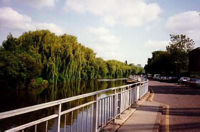
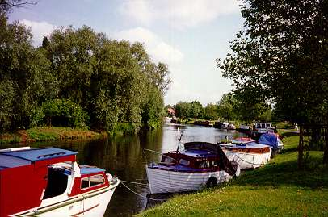
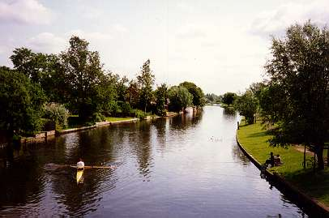
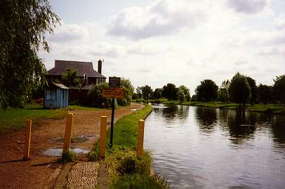
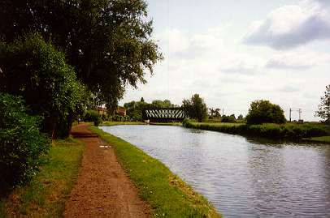

« The boathouses | Chesterton | Fen Ditton »

Narrow stretch heading towards Chesterton... scene of many blade clashes!

Chesterton corner is the favoured spectating location for local cows and swans!

The men's Bumps "Top Finish" as seen from Chesterton footbridge.

The bus shelter and Peter's Posts near the Pike and Eel pub are well-known landmarks.

The Railway Bridge.
« The boathouses | Chesterton | Fen Ditton »